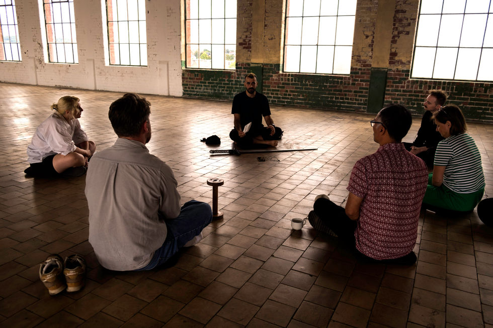
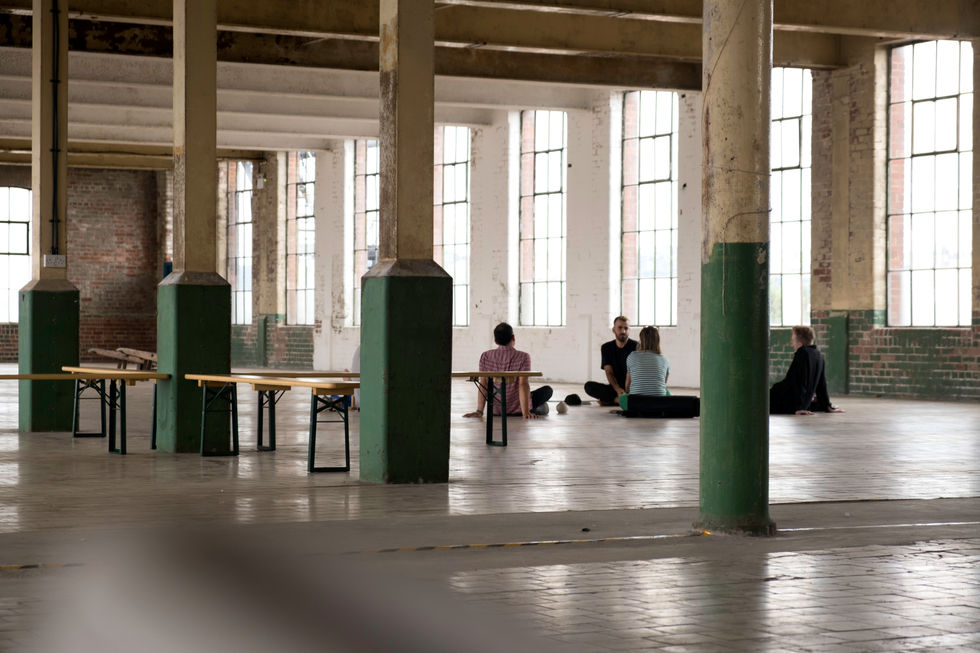
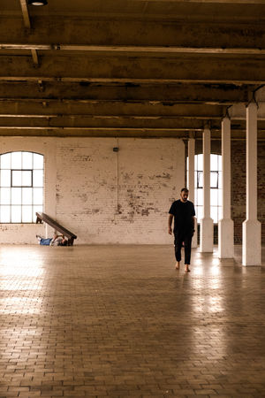
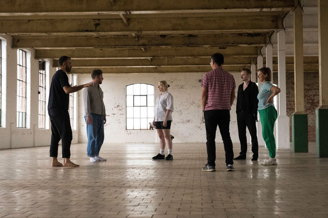
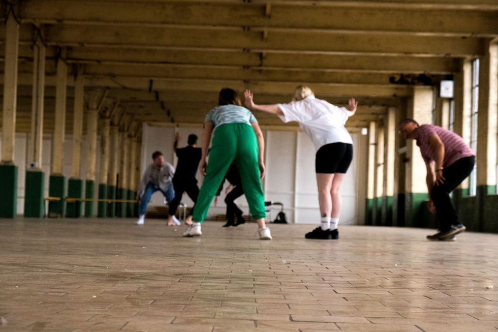
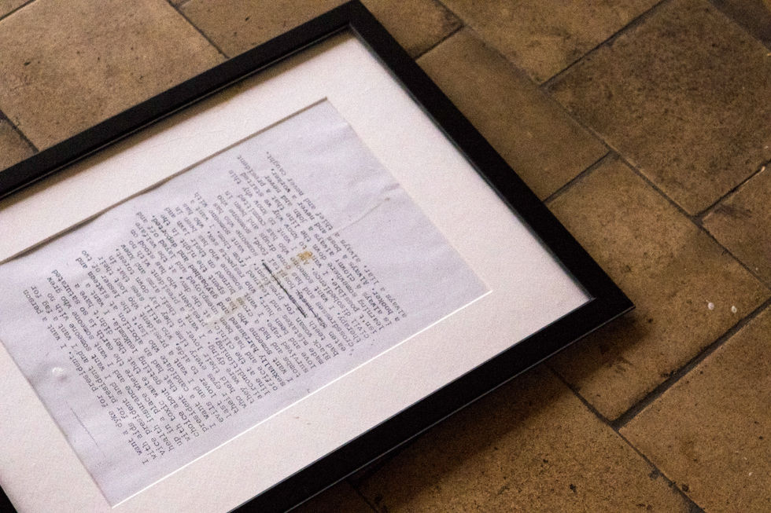
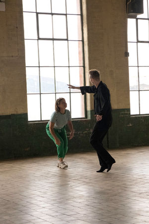
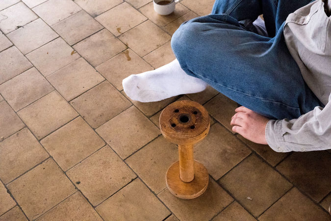
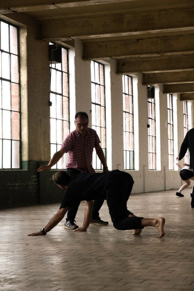

belfast, oppressed
During my Belfast residency, I delved into the region's complex history and culture through conversations with locals. Inspired by Augusto Boal's "The Theater of the Oppressed," I explored how performance art can empower individuals in their struggle against global capitalist oppression. We focused on the potential of gestures and mutual connections to facilitate personal liberation.
In this unique performance session, participants played dual roles as performers and spect-actors, sharing objects symbolizing personal oppression. Together, we created performances aimed at addressing these struggles, seeking gestures and connections to foster liberation. The results were personal, resembling a therapeutic meeting and a collective journey to overcome past traumas.







